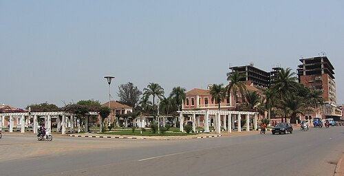
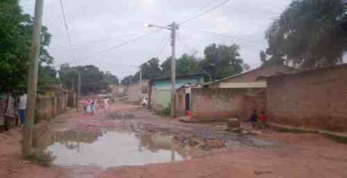
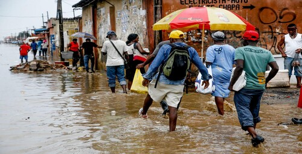
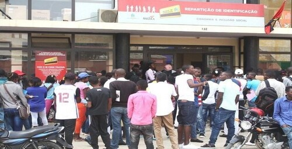
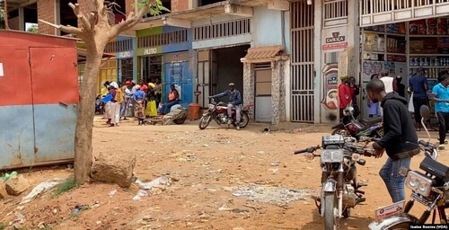
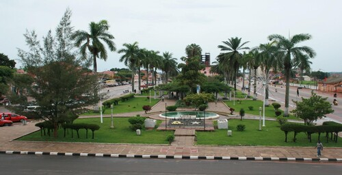

Malanje é uma terra bonita, com uma história, uma cultura e paisagens que merecem ser conhecidas. Mas existe uma outra Malanje que raramente aparece nas fotografias, nos discursos ou nas notícias: a Malanje dos bairros esquecidos, das dificuldades diárias e das famílias que lutam todos os dias para sobreviver.
Basta sair das zonas mais movimentadas para encontrar estradas em más condições, ruas esburacadas e bairros onde as dificuldades fazem parte da rotina. Quando chega a chuva, a situação torna-se ainda mais complicada. Algumas ruas transformam-se em caminhos de lama e água, dificultando a circulação de pessoas, motorizadas e viaturas. Para muitas famílias, sair de casa nesses dias transforma-se numa verdadeira aventura. Estradas Esburacadas e Atraso de Angola

Existe uma Malanje que não aparece nos noticiários com a mesma frequência: aquela onde vivem pessoas que enfrentam diariamente problemas de saneamento, transportes, estradas, água, energia e acesso a outros serviços básicos. São bairros onde as pessoas continuam a viver, trabalhar e criar os seus filhos apesar das dificuldades. Para muitas famílias, problemas que deveriam ser temporários acabam por fazer parte da rotina, afetando a forma como as pessoas se deslocam, estudam, trabalham e cuidam das suas famílias.
Enquanto algumas zonas recebem mais atenção, outras parecem permanecer esquecidas. E, para quem vive nesses lugares, a falta de condições não é uma notícia passageira. É a realidade de todos os dias. Pobreza e desespero em Camoma

Quando começa a chover, muitos moradores já sabem o que os espera. A água acumula-se nas ruas, a lama dificulta a passagem e alguns caminhos tornam-se quase impossíveis de atravessar. Quem precisa chegar ao trabalho, à escola, ao hospital ou ao mercado muitas vezes precisa enfrentar essas condições mesmo sem ter outra alternativa.
Nessas horas, parece que só Deus pode livrar algumas famílias das águas e da lama. Não deveria ser assim. Uma rua transitável, drenagem adequada e infraestruturas básicas deveriam fazer parte da vida normal de qualquer comunidade. Quando as chuvas chegam e encontram ruas sem condições de escoamento, os problemas tornam-se ainda maiores, afetando moradores, comerciantes, estudantes, trabalhadores e todos aqueles que precisam circular pela cidade. Ver vídeo no Facebook

Outra reclamação presente no dia a dia de muitos cidadãos é a dificuldade de acesso a determinadas oportunidades e serviços. Há pessoas que sentem que as suas ligações políticas podem influenciar o acesso a oportunidades, enquanto outras, sem essas ligações, enfrentam mais obstáculos.
É uma percepção que merece ser discutida com seriedade: os serviços públicos devem servir o público, independentemente da filiação ou preferência política de cada cidadão. Quando alguém sente que precisa de pertencer a um determinado grupo para ter acesso a uma oportunidade, a confiança nas instituições fica enfraquecida. Quéssua: uma localidade com mil problemas

Para muitas pessoas, quando as oportunidades de trabalho formal são limitadas, resta procurar outras formas de sobrevivência. A lavra continua a ser uma realidade importante para muitas famílias, enquanto a moto-táxi se tornou uma alternativa para quem precisa de ganhar algum dinheiro para sustentar a casa.
Não há vergonha nenhuma em trabalhar na lavra ou conduzir uma motorizada. O problema está em quando essas atividades deixam de ser uma escolha e passam a ser praticamente a única alternativa disponível para quem procura uma vida melhor. Licenciado em Ciências da Educação faz de moto-táxi o primeiro emprego

Falar das dificuldades de Malanje não significa dizer que Malanje não tem valor. Pelo contrário. É precisamente porque a cidade e as suas populações têm valor que os seus problemas precisam ser vistos e discutidos.
Por trás de cada estrada esburacada existe alguém que precisa chegar ao trabalho. Por trás de cada rua inundada existe uma família. Por trás de cada bairro esquecido existem crianças que precisam de estudar, jovens que procuram oportunidades e adultos que lutam diariamente para colocar comida na mesa.
Malanje não é apenas aquilo que aparece nas fotografias. É também a realidade de quem acorda cedo, enfrenta estradas degradadas, trabalha de sol a sol e continua a acreditar que amanhã pode ser melhor.
Talvez o primeiro passo para mudar uma realidade seja deixar de fingir que ela não existe. É preciso olhar para os bairros que quase ninguém vê, ouvir as pessoas que raramente são ouvidas e reconhecer as dificuldades que fazem parte do quotidiano de milhares de cidadãos. Conheça também as atrações de Malanje